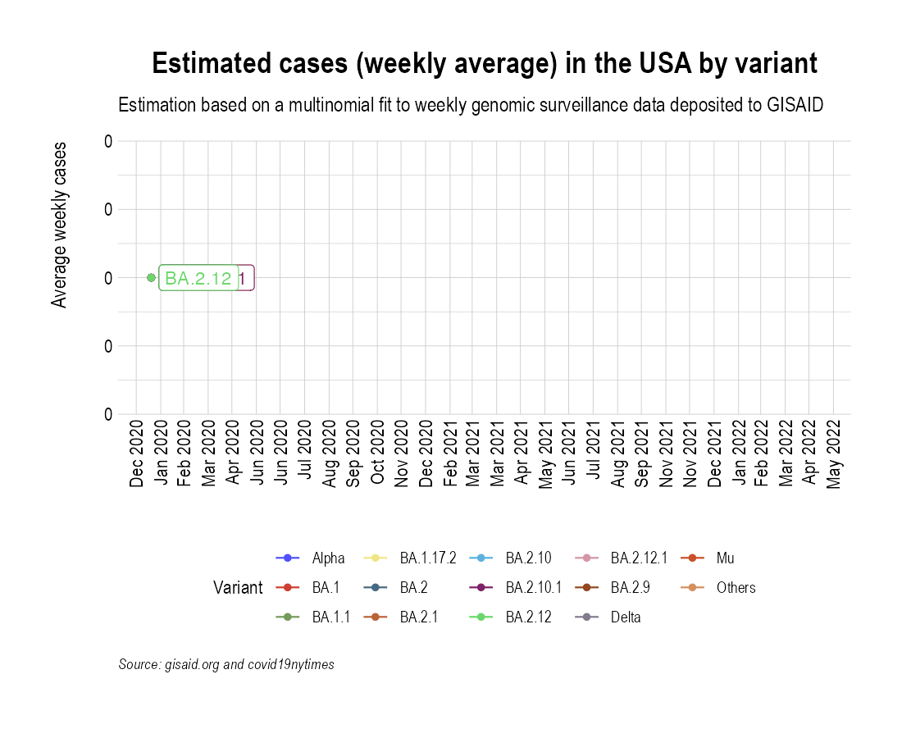

Animation of projected weekly cases - USA
Source:vignettes/VariantAnimation-USA.Rmd
VariantAnimation-USA.Rmd
suppressPackageStartupMessages({
library(covmuller)
library(covid19nytimes)
library(tidyverse)
})
theme_set(CovmullerTheme())Get variants data for USA
gisaid_metadata <- qs::qread("~/github/2021_Covid19_surveillance/data/all_metadata/metadata_tsv_2022_05_15.qs")
gisaid_usa <- gisaid_metadata %>%
filter(Country == "USA") %>%
filter(Host == "Human")
# format metadata
gisaid_usa <- FormatGISAIDMetadata(gisaid_usa)
gisaid_usa <- gisaid_usa %>%
arrange(State, MonthYearCollected) %>%
filter(pangolin_lineage != "Unknown")
vocs <- GetVOCs()
omicron <- vocs[["omicron"]]
vocs[["omicron"]] <- NULL
vocs[["lambda"]] <- NULL
vocs[["beta"]] <- NULL
vocs[["gamma"]] <- NULL
custom_voc_mapping <- list(
`BA.1.1` = "BA.1.1",
`BA.1` = "BA.1",
`BA.2` = "BA.2",
`BA.2.1` = "BA.2.1",
`BA.2.9` = "BA.2.9",
`BA.1.17.2` = "BA.1.17.2",
`BA.2.10` = "BA.2.10",
`BA.2.10.1` = "BA.2.10.1",
`BA.2.12` = "BA.2.12",
`BA.2.12.1` = "BA.2.12.1"
)
gisaid_usa <- gisaid_usa %>% filter(pangolin_lineage != "None")
gisaid_usa <- CollapseLineageToVOCs(
variant_df = gisaid_usa,
vocs = vocs,
custom_voc_mapping = custom_voc_mapping,
summarize = FALSE
)Get weekly cases for USA
all_state_cases <- refresh_covid19nytimes_states()
confirmed.tmp <- all_state_cases %>%
filter(data_type == "cases_total") %>%
arrange(date)
confirmed <- confirmed.tmp %>%
group_by(date) %>%
summarise(value = sum(value))
confirmed$daily_cases <- c(confirmed$value[1], diff(confirmed$value))
confirmed$WeekYear <- tsibble::yearweek(confirmed$date)
confirmed_subset_dateweekwise_long <- confirmed %>%
group_by(WeekYear) %>%
summarise(n = sum(daily_cases)) %>%
arrange(WeekYear) %>%
rename(WeekYearCollected = WeekYear)
gisaid_usa_weekwise <- SummarizeVariantsWeekwise(gisaid_usa)Project weekly cases to variant prevalence data from GISAID
voc_to_keep <- gisaid_usa_weekwise %>%
group_by(lineage_collapsed) %>%
summarise(n_sum = sum(n)) %>%
filter(n_sum > 50) %>%
pull(lineage_collapsed) %>%
unique()
gisaid_usa_weekwise <- gisaid_usa_weekwise %>% filter(lineage_collapsed %in% voc_to_keep)
usa_cases_pred_prob_sel_long <- FitMultinomWeekly(gisaid_usa_weekwise, confirmed_subset_dateweekwise_long)
#> # weights: 64 (45 variable)
#> initial value 8982630.169724
#> iter 10 value 3548597.260124
#> iter 20 value 2170600.412681
#> iter 30 value 2076336.997187
#> iter 40 value 1839221.890155
#> iter 50 value 1501127.423040
#> iter 60 value 1351351.906345
#> iter 70 value 1342795.548292
#> iter 80 value 1339152.090708
#> iter 90 value 1335636.896129
#> iter 100 value 1334512.860284
#> iter 110 value 1332465.961247
#> iter 120 value 1327248.109927
#> iter 130 value 1326318.709577
#> iter 140 value 1325691.863461
#> iter 150 value 1325236.959882
#> iter 160 value 1324490.369227
#> iter 170 value 1324423.779423
#> iter 180 value 1324273.593076
#> final value 1324271.865206
#> converged
the_anim <- PlotVariantPrevalenceAnimated(usa_cases_pred_prob_sel_long, title = "Estimated cases (weekly average) in the USA by variant", caption = "**Source: gisaid.org and covid19nytimes<br>**")
gganimate::anim_save(filename = here::here("docs/articles/USA_animated.gif"), animation = the_anim)
Look at cases after October,2021 only:
confirmed$MonthYear <- GetMonthYear(confirmed$date)
confirmed_subset_dateweekwise_long <- confirmed %>%
filter(MonthYear > "Oct 2021") %>%
group_by(WeekYear) %>%
summarise(n = sum(daily_cases)) %>%
arrange(WeekYear) %>%
rename(WeekYearCollected = WeekYear)
gisaid_usa_subset <- gisaid_usa %>% filter(MonthYearCollected > "Oct 2021")
gisaid_usa_weekwise <- SummarizeVariantsWeekwise(gisaid_usa_subset)
voc_to_keep <- gisaid_usa_weekwise %>%
group_by(lineage_collapsed) %>%
summarise(n_sum = sum(n)) %>%
filter(n_sum > 50) %>%
pull(lineage_collapsed) %>%
unique()
gisaid_usa_weekwise <- gisaid_usa_weekwise %>% filter(lineage_collapsed %in% voc_to_keep)
usa_cases_pred_prob_sel_long <- FitMultinomWeekly(gisaid_usa_weekwise, confirmed_subset_dateweekwise_long)
#> # weights: 44 (30 variable)
#> initial value 3388050.974109
#> iter 10 value 1151137.969301
#> iter 20 value 878857.100924
#> iter 30 value 724864.159002
#> iter 40 value 547236.181180
#> iter 50 value 540184.524980
#> iter 60 value 539085.302461
#> iter 70 value 538851.340841
#> iter 80 value 538652.828714
#> iter 90 value 538242.830497
#> iter 100 value 538225.082421
#> final value 538225.073468
#> converged
the_anim <- PlotVariantPrevalenceAnimated(usa_cases_pred_prob_sel_long, title = "Estimated cases (weekly average) in the USA by variant", caption = "**Source: gisaid.org and covid19nytimes<br>**")
gganimate::anim_save(filename = here::here("docs/articles/USA_animated_2021.gif"), animation = the_anim)